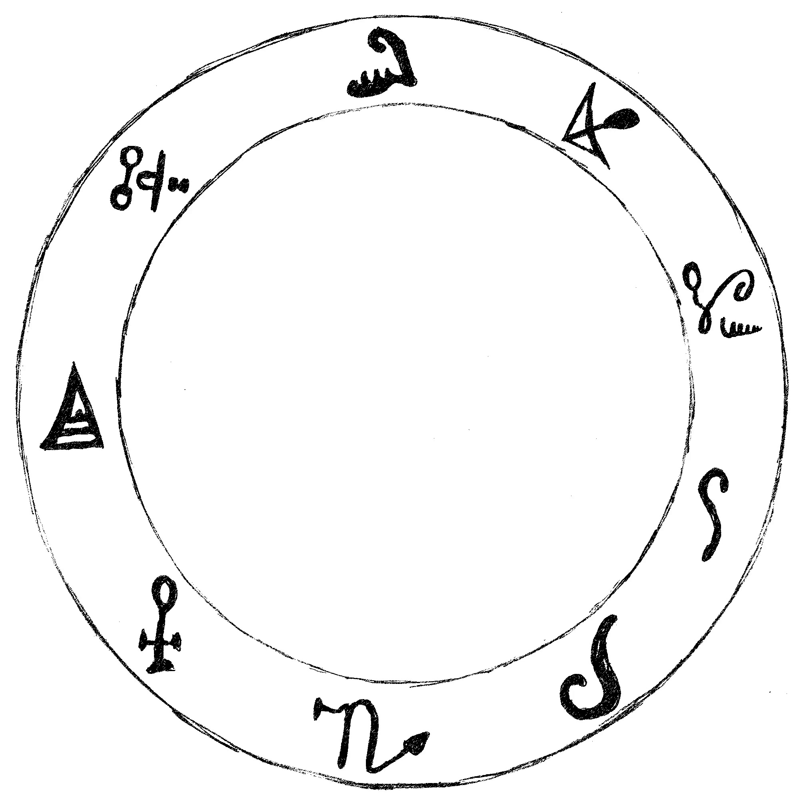

If you know the person you want to attract, these are the ritual instructions you need. This is the most powerful ritual in the book.
如果你认识你想要吸引的人，这些是你需要的仪式说明。这是书中最强大的仪式。
You can perform this at any time of the month, but there are two times that are particularly powerful. If you have limited contact with the person you are aiming to enflame, it is best to begin the ritual on the evening of a New Moon, and perform it for five nights in a row.
你可以在一个月中的任何时间进行这个仪式，但有两个时间特别有效。如果你与你想要点燃激情的人接触有限，最好在新月之夜开始仪式，并连续进行五个晚上。
If there is already some warmth and friendship between the two of you that seems close to being passion, then the best time to begin is five days before a Full Moon. Perform this five nights in a row, ending on the Full Moon.
如果你们之间已经有一些温暖和友谊，似乎接近于激情，那么最好的开始时间是满月前的五天。连续进行五个晚上，在满月之夜结束。
At one point in the ritual you will be asked to burn three red candles. Never burn a candle unless it is safe to do so. I don't want to sound patronizing, but I know of several occultists who've done simple candle rituals and invited disaster through fire. Candles may seem harmless, but many homes and lives are destroyed each year by fires that started with a candle. Bear in mind that you are lighting a fire inside your home. This may sound over-cautious, but it is a serious point.
在仪式中的某个时刻，你会被要求点燃三支红蜡烛。除非安全，否则不要点燃蜡烛。我不想听起来像在说教，但我知道有几位神秘学者做过简单的蜡烛仪式，结果却因火灾招致灾难。蜡烛看似无害，但每年都有许多家庭和生命因蜡烛引发的火灾而被毁。请记住，你是在你家里点火。这听起来可能过于谨慎，但这是一个严肃的问题。
In terms of economy, the best way to get three red candles is to buy one and snap it into three pieces. Make sure each candle is set in a holder that keeps it safe and secure.
从经济角度考虑，获得三支红蜡烛的最佳方法是买一支然后将其分成三段。确保每支蜡烛都放在能保持其安全稳固的烛台上。
First, you need to prepare a magickal ring. This can be copied from the following drawing. If you prefer you can print it out - you can download this my website:
http://galleryofmagick.com/images/
首先，你需要准备一个魔法环。可以从下面的图画中复制。如果你愿意，也可以打印出来——你可以从我的网站下载：
http://galleryofmagick.com/images/

If you do print it out, it helps if you draw over all the symbols yourself, with a black pen. You can use any paper, and this doesn't have to be an elaborate operation. Cut the circle out, and set it aside until you actually begin the ritual.
如果你确实打印出来了，用黑色的笔亲自描绘所有符号会更好。你可以使用任何纸张，这不必是一个复杂的制作过程。剪出圆环，放在一边，直到你真正开始仪式。
It helps to have a small block of Pyrite, which can be obtained from many occult suppliers, crystal shops and so on. It looks like this:
拥有一个小黄铁矿块会有帮助，这可以从许多神秘学用品商、水晶商店等处获得。它看起来像这样：
If you can not find pyrite, a small block of any metal will work, with iron being the best. If you can not get a small block of metal, a stone will do the job. Whatever you use, it should be small enough to fit inside the magick circle you've drawn.
如果你找不到黄铁矿，任何小块金属都可以，铁是最好的。如果你找不到小块金属，石头也可以。无论你使用什么，它都应该足够小，以适合你绘制的魔法圈内。
It is time for the ritual itself to begin. Find some time and space to be alone.
现在是开始仪式本身的时候了。找一些时间和空间独处。
Bathe or shower, as though preparing to have sex with the person you desire.
沐浴或淋浴，就像准备与你渴望的人发生性关系一样。
For best results, find a comfortable place to work without any distractions. You may want to dim the lights or close the curtains if it is daytime. If it is warm enough, and if you find it a lustful experience, perform the ritual naked. Otherwise, dress in a way that makes you feel attractive.
为了获得最佳效果，找一个舒适的地方工作，不受任何干扰。你可能想调暗灯光或拉上窗帘（如果是白天）。如果天气足够暖和，并且你觉得这是一种充满情欲的体验，可以裸体进行仪式。否则，穿上让你感觉有吸引力的衣服。
Now take a fresh sheet of paper of any kind, and tear off a small scrap. Make sure there are no straight edges – the scrap should have a torn edge all around. On this, write the name of the person you wish to seduce. Write the names several times, to make a circle. It should looking something like this.
现在拿一张任何类型的干净纸，撕下一小块。确保没有直边——这块纸应该四周都是撕裂的边缘。在这上面，写下你希望诱惑的人的名字。把名字写几次，形成一个圆圈。它应该看起来像这样。

Place this scrap of paper face down in the middle of the magickal ring, so that you can no longer see the written name. Now place your Pyrite, or other heavy object, over the scrap of paper to hold it in place. Consider that the person you are attracting is now held within the powers of this magickal ring.
将这张纸片面朝下放在魔法环的中央，这样你就看不到写着的名字了。现在将你的黄铁矿或其他重物放在纸片上以固定它。想象你正在吸引的人现在被这个魔法环的力量所控制。

Ensure that three red candles are placed nearby, but do not light them yet.
确保附近放着三支红蜡烛，但先不要点燃它们。
Say the following words out loud.
大声说出以下的话。
'I am grateful for all that I have. I am humble when I revel in the wonders of power.'
“我为我所拥有的一切而感恩。当我陶醉于力量的奇迹时，我心怀谦卑。”
As you say the first sentence take a few moments to think of things that you are truly grateful for. This may be the roof over your head, a movie you watched, a good cup of coffee. Don't try to be grand and impressive, but simply think of recent pleasures that genuinely make you feel grateful.
当你说第一句话时，花点时间想想那些你真正感激的事情。这可能是你头顶的屋顶，你看过的一部电影，一杯好咖啡。不要试图显得伟大和令人印象深刻，而只是想想最近那些真正让你感到感激的乐趣。
As you read the second sentence, you are making a pact. You are promising that when you have the power to seduce with magick, you will be joyously impressed and grateful for the power, but you will not be boastful or arrogant about your abilities. Consider these thoughts as you say the words.
当你读第二句话时，你正在订立一个契约。你承诺当你拥有用魔法诱惑的力量时，你会欣喜地为这力量感到印象深刻和感激，但你不会吹嘘或傲慢地对待你的能力。当你说这些话时，思考这些想法。
If you need to, say these sentences three times, to make sure you actually feel the words.
如果需要，把这些句子说三遍，以确保你真正感受到这些话语。
You should light your three red candles.
你应该点燃你的三支红蜡烛。
Now comes the part of the ritual here you summon up the power of fire, heat and passion. Say the following words out loud, vibrating them through your throat.
现在到了仪式中你召唤火、热和激情力量的部分。大声说出以下的话，让它们在你的喉咙里震动。
Descendimus ab aere.
(DESK-END-IM-US AB AIR)
Ut ascendat et descendat.
(UT ASK-END-AT ET DESK-END-AT)
Motus inter duos.
(MOW-TUS INT-ER DEW-OS)
Nova inventa in lucem.
(NOVA INVENTA IN LOOCH-EM)
Insigne corpus ex elementis.
(IN-SIG-NAY CORP-US EX ELL-EM-ENT-IS)
Non est accidens.
(NON EST AXE-ID-ENS)
Mundus in mensa mea erant.
(MUND-US IN MENSA MAY-AH AIR-ANT)
Miscere cum lapidibus ferrum ad caeruleum virides gemmas.
(MISK-AIR CUM LAP-ID-IB-US FAIR-UM AD CARE-UL-EE-UM VI-RID-EES GEM-ASS)
Et venit, et posthac futura.
(ET VEN-IT ET POST-HACK FUT-OORA)
Non sunt ossa mea.
(NON SUNT OSSA MAY-AH)
Specto, locus est medium.
(SPECK-TOE, LOW-KUS EST MED-EE-UM)
Ut ambules in via ignis.
(UT AMB-YOU-LEZ IN VEE-AH IG-NIS)
Tempore movetur.
(TEMP-OAR-RAY MOVE-EH-TOUR)
中文译文
Descendimus ab aere.
(DESK-END-IM-US AB AIR) (我们从空气中降临)
Ut ascendat et descendat.
(UT ASK-END-AT ET DESK-END-AT) (使其上升与下降)
Motus inter duos.
(MOW-TUS INT-ER DEW-OS) (两者之间的运动)
Nova inventa in lucem.
(NOVA INVENTA IN LOOCH-EM) (新发现显于光明)
Insigne corpus ex elementis.
(IN-SIG-NAY CORP-US EX ELL-EM-ENT-IS) (由元素构成的卓越躯体)
Non est accidens.
(NON EST AXE-ID-ENS) (并非偶然)
Mundus in mensa mea erant.
(MUND-US IN MENSA MAY-AH AIR-ANT) (世界曾在我的桌上)
Miscere cum lapidibus ferrum ad caeruleum virides gemmas.
(MISK-AIR CUM LAP-ID-IB-US FAIR-UM AD CARE-UL-EE-UM VI-RID-EES GEM-ASS) (将铁与石头混合成蓝色和绿色的宝石)
Et venit, et posthac futura.
(ET VEN-IT ET POST-HACK FUT-OORA) (它已来临，此后亦将如此)
Non sunt ossa mea.
(NON SUNT OSSA MAY-AH) (它们不是我的骨头)
Specto, locus est medium.
(SPECK-TOE, LOW-KUS EST MED-EE-UM) (我注视，此地即是媒介)
Ut ambules in via ignis.
(UT AMB-YOU-LEZ IN VEE-AH IG-NIS) (愿你行走于火焰之道)
Tempore movetur.
(TEMP-OAR-RAY MOVE-EH-TOUR) (时间被移动)
Imagine the sun. Imagine it as a vast ball of heat and flame, but then see it shrinking, so that in moments it becomes a star. As the sun shrinks, it moves inside your heart and resides there. Imagine this tiny pinprick of light within your heart, containing all the massive power and heat of the sun.
想象太阳。把它想象成一个巨大的火热火球，然后看到它收缩，瞬间变成一颗星星。当太阳收缩时，它会移入你的心脏并停留在那里。想象一下你心中这个微小的光点，它包含了太阳所有巨大的能量和热量。
Don't worry if your imagination is not perfectly clear. All you need to do is imagine that the sun has shrunk and is now a tiny star in your heart.
如果你的想象力不够清晰，别担心。你只需要想象太阳已经缩小，现在是你心中的一颗小星星。
You should now being to picture the person you desire, and hear their name in your head. You can begin to masturbate at this point, but it is not essential. Masturbation is an extremely potent way to add energy to a working, but it requires some control because you do not want to reach orgasm until later in the ritual. It's your choice, but for the best results I highly recommend masturbation.
你现在应该开始想象你渴望的人，并在脑海中听到他们的名字。此时你可以开始自慰，但这不是必须的。自慰是为魔法仪式增加能量的一种极其有效的方式，但它需要一些控制，因为你不希望在仪式后期才达到高潮。这是你的选择，但为了获得最佳效果，我强烈建议自慰。
For several minutes, picture yourself with the person you desire. Imagine sexual acts and a strong passion and desire between the two of you.
几分钟内，想象你自己和你渴望的人在一起。想象性行为以及你们之间强烈的激情和欲望。
Once you feel that your lust for the person is strong, say these words:
一旦你感觉到对那个人的欲望变得强烈，就说出这些话：
Nades, Suradis, Maniner
(NAR-DES, SUR-AH-DIS, MAN-IN-ERR)
中文译文
Nades, Suradis, Maniner
(NAR-DES, SUR-AH-DIS, MAN-IN-ERR) (纳德斯，苏拉迪斯，曼尼纳)
As you say the words, know that you are summoning spirits of lust. You may sense their presence upon first uttering the words. Repeat the words two more times, and you should feel a slight change in the atmosphere.
当你说这些话的时候，要知道你正在召唤情欲的灵体。你可能在第一次说出这些话的时候就感觉到它们的存在。再重复两次这些话，你应该会感觉到气氛略有变化。
Visualize an orange-rosy light before you. By calling the spirits, you have summoned this light.
在你面前想象一道橙红色的光芒。通过召唤灵体，你已经召唤了这道光。
You can see an impression of this rosy light at http://galleryofmagick.com/images/
你可以在 http://galleryofmagick.com/images/ 看到这种玫瑰色光芒的印象。
Picture the person you want to be with inside this rosy light, and picture yourself there as well. Imagine that you are together, kissing, making love. When you can see this and feel the pleasure of it, say the words:
想象你想要与之在一起的人在这玫瑰色的光芒中，也想象你自己也在那里。想象你们在一起，亲吻，做爱。当你能看到这一切并感受到它的乐趣时，说出这些话：
Sader, Prostas, Solaster
(SAR-DER, PROS-TAS, SOL-AST-ER)
中文译文
Sader, Prostas, Solaster
(SAR-DER, PROS-TAS, SOL-AST-ER) (萨德，普罗斯塔斯，索拉斯特)
Speak directly to these spirits of lust, with authority, while picturing your target. Repeat these spirit names over and over.
直接对这些情欲的灵体说话，带着权威，同时想象你的目标。一遍又一遍地重复这些灵体的名字。
It's vital that you picture yourself in lustful situations with your target. Don't hold back with these images. Picture yourself doing exactly what you desire, and picture your target loving the sex. DO NOT picture your first date, or how you plan to get together. Picture the result, not the process. Only picture lustful sex, as though it is happening now. If you are masturbating, take yourself close to orgasm as you picture these lustful acts.
至关重要的是，你要想象自己与目标处于充满情欲的情境中。不要对这些画面有所保留。想象自己正在做你确切渴望的事情，并想象你的目标也热爱这种性爱。不要想象你们的第一次约会，或者你们计划如何在一起。想象结果，而不是过程。只想象充满情欲的性爱，就好像它现在正在发生一样。如果你正在自慰，在想象这些充满情欲的行为时，让自己接近高潮。
After a minute or two say the following (but replace N. with the full name of your target.) Remember you are speaking to the spirits named above.
一两分钟后，说出以下的话（但用你目标的全名替换N）。记住你是在对上面提到的灵体说话。
'Bring me N.
“带N.来我身边。
Enflame his/her mind and body with passion for me
点燃他/她的思想和身体对我的激情
and you may feed on the energy and ecstasy of our sex to your satisfaction.'
你们可以以我们性爱的能量和狂喜为食，直到满足。”
If you are masturbating, continue to picture the object of your affection until you reach orgasm.
如果你正在自慰，继续想象你心仪的对象，直到达到高潮。
Wipe a small amount of your sexual fluids on the scrap of paper in the center of the ring. Not too much, because you will be doing this for five nights.
在环中央的纸片上擦少量你的体液。不要太多，因为你将连续五天这样做。
If you are not masturbating (or if you are masturbating but can't reach orgasm), simply let the images fade away. To close the ritual say the following words, vibrating each word through your throat.
如果你没有自慰（或者如果你正在自慰但无法达到高潮），就让影像渐渐消失。为了结束仪式，说出以下的话，让每个词都通过你的喉咙震动。
Venerandum ignis non timeo.
(VEN-ER-AND-UM IG-NIS NON TIM-EE-OH)
Et ignis non tollit.
(ET IG-NIS NON TOH-LIT)
Ignis concordiam facit.
(IG-NIS CONC-ORD-EE-AM FASS-IT)
中文译文
Venerandum ignis non timeo.
(VEN-ER-AND-UM IG-NIS NON TIM-EE-OH) (我不惧怕可敬的火焰)
Et ignis non tollit.
(ET IG-NIS NON TOH-LIT) (火焰亦不熄灭)
Ignis concordiam facit.
(IG-NIS CONC-ORD-EE-AM FASS-IT) (火焰促成和谐)
Blow out the candles.
吹灭蜡烛。
The ritual is over. Put your magickal implements away where they will not be disturbed again until you need them, and do not think about the result you are seeking. To distract yourself you should cook, eat, sing, talk to a friend, but do not sit around wondering whether the magick will work. The work is done, so get on with something else.
仪式结束了。把你的魔法工具收好，放在不会再被打扰的地方，直到你需要它们为止，不要去想你所寻求的结果。为了分散自己的注意力，你应该做饭、吃饭、唱歌、和朋友聊天，但不要坐着琢磨魔法是否会起作用。事情已经完成了，所以去做点别的事情吧。
Repeat the ritual for five nights. One the final night, let the candles burn down until they go out – but only if it is safe to do so. Never leave then unattended.
连续五天重复这个仪式。在最后一晚，让蜡烛燃尽熄灭——但前提是这样做是安全的。切勿让它们无人看管。
Once the ritual is complete for the last time, roll the scrap of paper up into a ball, then wrap that up in the magickal paper ring you drew. Screw it all up, and bury it somewhere nearby, preferably on your property. If you have no nearby place to bury it, there is no urgency to get rid of it – so you don't need to wander the streets at night looking for a suitable place to dispose of it – but within one day find somewhere to bury it that is not a graveyard.
最后一次仪式完成后，把纸片揉成一团，然后用你画的魔法纸环把它包起来。把它们全部揉起来，埋在附近某个地方，最好是在你自己的地产上。如果你附近没有地方可以埋葬它，也不必急于处理掉它——所以你不需要在晚上在街上徘徊寻找合适的处理地点——但在一天之内找到一个不是墓地的地方把它埋起来。
When you next see the target of your ritual, act as you normally would, but visualize a veil of white light wrapping itself around the person. Take just a few seconds to visualize this, then carry on as normal.
当你下次见到你仪式的目标时，像平常一样行事，但想象一层白光包裹着那个人。花几秒钟想象一下这个情景，然后像平常一样继续。
It will not be long before you are given a sign that something has changed between you. The magick has worked and how you deal with it is up to you.
不久之后，你就会得到一个迹象，表明你们之间发生了一些变化。魔法已经奏效，如何处理则取决于你。